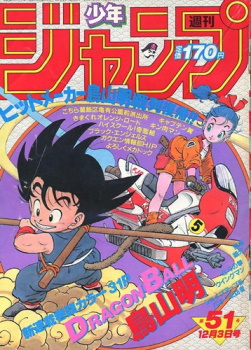

Escrito e ilustrado por Akira Toriyama, Dragon Ball foi serializado na antologia
de mangá Weekly Shonen Jump de 20 de novembro de 1984 a 23 de maio de 1995, quando Toriyama ficou
exausto e sentiu que precisava de uma pausa do desenho. Os 519 capítulos individuais foram
publicados em 42 volumes tankōbon pela Shueisha de 10 de setembro de 1985 a 4 de agosto de 1995.
Entre 4 de dezembro de 2002 e 2 de abril de 2004, os capítulos foram relançados em uma coleção de 34
volumes kanzenban, que incluiu um final ligeiramente reescrito, novas capas, e arte coloridas de sua
publicação na Weekly Shōnen Jump. A edição de fevereiro de 2013 da V Jump, que foi lançada em
dezembro de 2012, anunciou que partes do mangá serão totalmente coloridas e relançadas em 2013.
Vinte volumes, começando pelo capítulo 195 e agrupados por arcos de história, foram lançados entre 4
de fevereiro de 2013 e 4 de julho de 2014. Doze volumes, cobrindo os primeiros 194 capítulos, foram
publicados entre 4 de janeiro e 4 de março de 2016. Uma edição sōshūhen que visa recriar o mangá
como ele foi originalmente serializado na Weekly Shonen Jump com páginas a cores, texto promocional
e previsões do próximo capítulo, começou a ser publicado em 13 de maio de 2016.